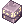

Bangungot Hospital
Jump to navigation
Jump to search
| This quest or instance is repeatable. | ||
|---|---|---|
| Cooldown | Tickets Available | |
|
3 days and 22 hours |
Solo: 0 | Party: 0 |
Bangungot Hospital is an Instance located in Port Malaya. Its boss is Bangungot.
Access Quest
Part 1: Cautious Village
| Requirements | |
|---|---|
| Base Level: | - |
| Starting Point: | |
| Items: |  6 Blue Gemstone, 6 Blue Gemstone,  6 Holy Water 6 Holy Water
|
| Rewards | |
| Experience: | Base 4,950,000 / Job 5,000,000 |
| Items: | - |
| Others: | - |
- Talk to Rodel the Guard .
- Talk to Phong in Mumbaki . Choose any of the options.
- Talk to Old Man Nardo .
- Talk to Collection Dealer Woeon .
- Talk to Pedro the Sailor . Choose Sure and whichever you want.
- Talk to Blacksmith Pandoi .
- Talk to Talah and Romel next to her.
- Return to Phong in Mumbaki . Choose Explain what happened and Holy Water.
- Deliver the items to the 6 people you talked with.
- Return to Phon in Mumbaki and gain Base EXP 4,950,000, Job EXP 5,000,000.
Part 2: Nurse in Port Malaya
| Requirements | |
|---|---|
| Base Level: | 100 |
| Starting Point: | |
| Items: | |
| Rewards | |
| Experience: | Base 250,000 / Job |
| Items: | 5 Ancient Grudge, 10 Lesser Agimat,  Old Purple Box |
| Others: | Access to Bangungot Hospital F2 |
- Use the Warper > Towns > Malaya.
- Talk to Nurse Las . Choose Yes, About the hospital, Reason for stalling me.
- Give
2 Rotten Bandage to her.
- Talk to her again.
- Click on the Hospital Door .
- Return to Nurse Las .
- Talk to Village Woman and choose Ask about the hospital.
- Return to Nurse Las .
- Talk to Village Man and choose Ask about the hospital.
- Return to Nurse Las .
- Go to Dr. Boon . Choose No.
- Return to Nurse Las .
- Click on the Hospital Door .
- Return to Nurse Las . Choose Ask about Mom.
- Talk to Bushes and choose Ask about the Old Lady.
- Click on Suspicious Wooden Stick that spawns around the building. Keep clicking until you get one, two or three Lesser Agimats. Check Nurse Las if she continues its script.
- Return to Nurse Las . Choose Go.
- Talk to the Bent Old Lady . Choose Ask about the hospital.
- Talk to her again.
- Return to Nurse Las .
- You will be teleported inside. Talk to the Nurse , choose Go outside, then come inside again.
- Click on the Suspicious Wooden Stick .
- Talk to the Nurse .
- Return to the Nurse and choose Go outside.
- Return to the Bent Old Lady .
- Talk to the Bent Shaman .
- Return to Nurse Las . Go inside the hospital .
- Click on the Suspicious Wooden Stick . You'll be teleported out.
- Talk to the Nurse . You gain 5 Ancient Grudge, 10 Lesser Agimat and Old Purple Box. Base EXP, Job EXP.
Walkthrough
Be careful! Once you leave, you cannot re-enter this instance.
- Talk to the Nurse to create the instance. You have 1 hour to complete this instance.
- Kill all Mangkukulam in each room and proceed. They spawn as you clear the rooms.
- Fight Bangungot. You have to kill it or you will go to Phase B.
- Phase B: You'll be teleported to another part of the map. Bangungot will spawn, don't bother about it. Enter the warp and kill all Mangkukulam. Once you are done, you'll be teleported back.
- After you defeated Bangungot, a Pillar of Spirit will spawn. It has 250 HP and takes 1 damage. Kill it under 1 minute or Bangungot will return with full HP.